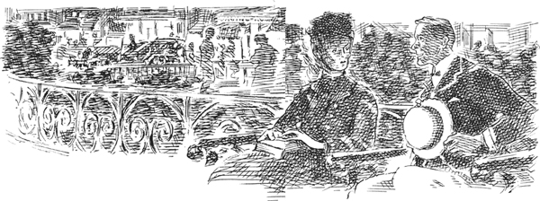
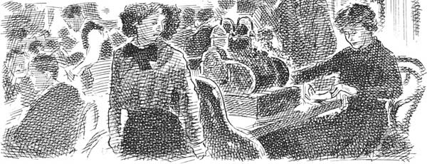
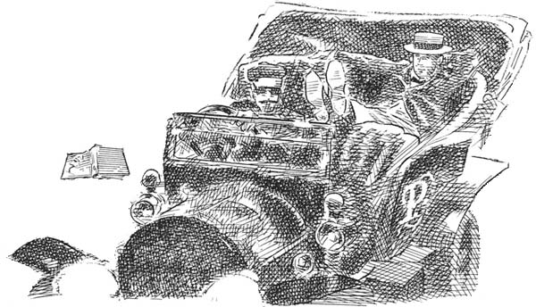

5
Listen to Part 1:

CHIẾC XE ĐANG ĐỢI
Buổi tối yên tĩnh và ấm áp. Một phụ nữ trẻ bước vào công viên nhỏ ở Thành phố New York. Chiếc váy xám nhạt của cô đơn giản và cô đội một chiếc mũ xám nhỏ có mạng che mặt. Phía sau tấm màn che, khuôn mặt cô bình tĩnh và xinh đẹp. Cô ngồi xuống ghế và bắt đầu đọc sách.
Mỗi ngày trong tuần đó, người phụ nữ trẻ đều đến cùng một nơi vào cùng thời điểm. Và mỗi ngày, một thanh niên đều nhìn thấy cô ở đó. Tối hôm đó, anh đang đợi gần chỗ cô ngồi. Anh nhìn cô gái trẻ ngồi xuống. Anh nhìn cô đọc sách.
Đột nhiên, cô gái trẻ làm rơi cuốn sách. Chàng thanh niên vội chạy đến. Anh nhặt cuốn sách và đưa cho cô.
‘Một buổi tối đáng yêu,’ anh nói.
Trong giây lát, người phụ nữ mặc đồ xám nhìn chàng trai một cách bình tĩnh. Rồi cô trò chuyện với anh. Giọng cô cũng rất hay.
‘Hãy ngồi xuống chiếc ghế này,’ nhẹ nhàng, cô nói với anh. ‘Giờ tôi không đọc được. Chúng ta sẽ nói chuyện trong vài phút.’
Chàng trai trẻ nhanh chóng ngồi xuống cạnh cô. Quần áo và khuôn mặt anh đều bình thường. Những lời tiếp theo của anh cũng bình thường như vậy.
‘Cô là một cô gái đáng yêu,’ anh nói. ‘Cô thật xinh đẹp! Tôi đã thấy cô ở đây hôm qua. Cô có thấy tôi không, cô hoa nhỏ?’

Listen to Part 2:
Cô gái trẻ nhìn anh lạnh lùng.
‘Tôi không quen anh,’ cô nói. ‘Nhưng tôi là một tiểu thư. Hãy nhớ điều đó. Xin đừng gọi tôi là “cô hoa nhỏ” nữa.’
‘Tôi rất xin lỗi,’ chàng trai trẻ nói. ‘Nhưng những cô gái khác trong công viên –’
‘Tôi không biết gì về những cô gái trẻ khác trong công viên,’ cô nói. ‘Tôi không biết gì về thế giới bình thường, thưa ngài –?’
‘Tên tôi là Parkenstacker,’ chàng trai trẻ nói. ‘Và tên của cô là –?’
Cô gái trẻ lắc đầu.
‘Tôi sẽ không nói tên mình cho anh biết,’ cô nói. ‘Tên và khuôn mặt của tôi thì ai cũng biết. Hình ảnh của tôi thường xuất hiện trên báo và tạp chí. Nhưng tôi đến đây một cách bí mật. Chiếc váy, cái mũ và tấm mạng che mặt này là của người hầu gái của tôi. Tôi không phải là người bình thường. Tôi không biết gì về thế giới bình thường, ngài Stackenparker –’
‘Parkenstacker,’ chàng trai trẻ nói.
‘Thưa ngài Parkenstacker. Tôi không biết gì về thế giới bình thường,’ cô gái trẻ nói thêm lần nữa. ‘Nhưng tôi muốn gặp một số người bình thường. Mỗi ngày tôi đều đến đây vì lý do đó. Tôi nói chuyện với anh hôm nay cũng vì lý do đó. Tôi muốn nói chuyện với một người không có tiền và không có quyền thế. Ồ, tôi chán tiền lắm rồi! Tôi chán những người đàn ông giàu có lắm rồi! Tôi chán đồ trang sức lắm rồi!’
Chàng trai trẻ rất ngạc nhiên.
Listen to Part 3:
‘Nhưng tiền không phải thứ tuyệt vời sao?’ anh hỏi.
‘Một ít tiền thì tốt,’ cô gái trẻ trả lời. ‘Nhưng hàng triệu đô la thì rất nhàm chán! Đi du lịch, ăn tối, diễn kịch, khiêu vũ – hết lần này đến lần khác! Đôi khi, tiếng va vào ly của những viên đá trong ly rượu sâm banh cũng làm tôi mệt mỏi!’
Anh Parkenstacker lại ngạc nhiên lần nữa.
‘Người giàu có bỏ đá vào rượu sâm banh ư?’ anh hỏi. ‘Họ không chỉ cho đá vào xung quanh chai sao?’
Trong phút chốc, cô gái trẻ tỏ ra tức giận. Rồi cô bật cười.
‘Đây là mốt mới,’ cô nói. ‘Tuần này, tất cả chúng tôi đều cho đá vào rượu sâm banh. Hoàng tử xứ Tartary đã làm như vậy vào tuần trước, tại khách sạn Waldorf. Và giờ thì tất cả chúng tôi đều làm như vậy rồi!’
‘Tôi xin lỗi,’ chàng trai trẻ nói. ‘Tôi không biết gì về các hoàng tử.’
‘Còn tôi thì biết quá nhiều về họ,’ cô gái trẻ nói. ‘Hoàng tử, công tước – tất cả đều yêu tôi. Tuần trước, một công tước người Đức muốn cưới tôi. Anh ta gặp tôi tại khách sạn Waldorf. Anh ta nói: “Tôi muốn cô làm vợ tôi”. Nhưng tôi không yêu anh ta. Tôi không yêu bất kỳ ai cả, thưa ngài Packenstarker.’
‘Parkenstacker!’ chàng trai trẻ nói. Anh nhìn vào mắt cô gái trẻ. Anh hỏi cô ấy: ‘Cô có thể yêu một người đàn ông bình thường không?’
Cô gái trẻ nhìn anh bình thản. ‘Anh làm nghề gì?’ cô hỏi.
Listen to Part 4:
‘Tôi làm một công việc rất bình thường,’ chàng trai trẻ trả lời. ‘Nhưng cô có thể yêu một người đàn ông bình thường không?’
‘Điều đó thì có thể,’ cô nói. ‘Nhưng tôi đã hỏi anh một câu hỏi. Anh làm nghề gì? Làm ơn trả lời tôi.’
‘Tôi làm việc ở một nhà hàng,’ anh Parkenstacker nói.
Cô gái mặc đồ xám dịch dọc ghế ra xa chàng trai trẻ.
‘Anh là bồi bàn ư?’ cô hỏi.
‘Không. Tôi không phải là bồi bàn,’ anh trả lời. ‘Anh có thấy nhà hàng kia không?’
Người đàn ông trẻ chỉ vào một nhà hàng lớn trên phố, đối diện với công viên nhỏ. Nhà hàng có biển hiệu đèn điện sáng rực ở cửa sổ.
‘Tôi làm việc ở đó,’ anh nói. ‘Tôi là thủ quỹ. Các khách hàng trong nhà hàng đó trả tiền cho tôi.’
Đột nhiên, cô gái trẻ trở nên lo lắng. Cô nhìn vào chiếc đồng hồ nhỏ trên cổ tay và nhanh chóng đứng dậy. Cô cất cuốn sách vào một chiếc túi nhỏ.
‘Giờ tôi phải đi rồi,’ cô nói. ‘Tôi phải đi dự bữa tối nhàm chán, rồi tôi phải đến rạp hát. Xe của tôi đang ở góc công viên.’
Listen to Part 5:
‘Chiếc xe trắng lớn đó phải không?’ chàng trai trẻ hỏi. ‘Đó có phải là xe của cô không?’
‘Vâng, tôi luôn đến đây bằng chiếc xe trắng đó,’ cô gái trẻ trả lời. ‘Pierre, tài xế của tôi, đang đợi tôi. Chúc anh ngủ ngon.’
‘Chúng ta còn gặp lại nhau không?’ Ngài Parkenstacker hỏi.
‘Tôi không biết nữa,’ cô gái mặc đồ xám trả lời.
‘Giờ đã muộn và trời tối rồi,’ chàng trai trẻ nói. ‘Tôi sẽ đi cùng cô đến –’
‘Không!’ cô gái trẻ nói. ‘Làm ơn hãy ngồi ở đây trong mười phút nữa. Tên của gia đình tôi xuất hiện trên các cánh cửa của chiếc xe. Tôi không muốn anh biết tên của chúng tôi. Xin hãy ở đây. Chúc anh ngủ ngon, thưa ngài Parkenstacker.’
Cô gái mặc đồ xám đi nhanh về phía phố.
Chàng trai trẻ nhìn cô trong nửa phút. Rồi anh đi theo cô ra khỏi công viên nhỏ.
Cô gái trẻ đi lên chiếc xe trắng. Cô dừng lại và nhìn nó trong vài giây. Rồi cô đi ngang qua chiếc xe và chạy sang đường bên kia. Cô vào nhà hàng có biển hiệu đèn điện sáng rực.
Cô gái trẻ đi qua một cánh cửa ở phía sau nhà hàng. Một phút sau, cô quay trở lại phòng mà không đội mũ và không che mặt nữa.
Listen to Part 6:
Quầy thủ quỹ ở phía trước nhà hàng. Một cô gái trẻ tóc đỏ đang ngồi ở quầy. Đột nhiên, cô nhìn đồng hồ. Rồi cô nhìn thấy cô gái mặc đồ xám và đứng dậy. Cô gái mặc đồ xám ngồi vào quầy.

Trên phố đối diện nhà hàng, chàng trai trẻ bước đi chậm rãi trên vỉa hè. Anh nhìn thấy một cuốn sách nằm trên mặt đất. Đó là cuốn sách của cô gái trẻ. Cuốn sách đã rơi ra khỏi túi của cô. Anh nhặt cuốn sách lên và nhìn vào. Đó là một cuốn sách về những câu chuyện tình lãng mạn. Những câu chuyện trong sách kể về những cô gái trẻ nghèo. Trong truyện, những cô gái này kết hôn với các hoàng tử, công tước và những người đàn ông giàu có trong những ngôi nhà đẹp.
Chàng trai trẻ để rơi cuốn sách. Anh đứng trên vỉa hè một lúc. Rồi anh đi về phía chiếc xe trắng lớn và lên xe.
‘Đưa tôi về nhà, Henri,’ anh nói với người lái xe.
